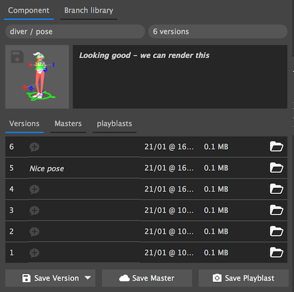
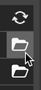
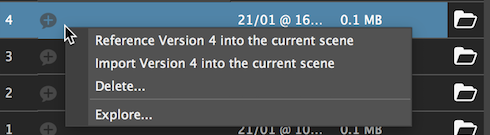
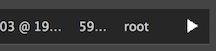
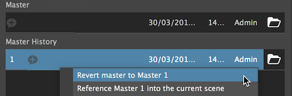

The component tab

When you select a component from the navigation panel, its will show in the component panel.
The panel is made of the component path, number of versions, thumbnail and a note.
- Save a thumbnail - click on the small disc icon at the top left corner of the thumbnail.
- Save or edit note - double click the note area.
Versions
The version tab will display all the versions of the component.
-
Open version - click the open button to load requested version.

- If the version is already loaded a reload button will appear.
-
Save note - double click the + balloon.
Additionally we can see the file size, save time & data and the user that saved the version (For project's with users).
Save version
- Save version - Save the current maya file as a new version.
- Save only selection - Save the current selection as a new version.
- You can choose to save with with all connection or just textures.
- Save from file - Select a file to save as the new version.
Version actions menu

Right click on a version to invoke the menu
- Reference version # into the current scene - Reference the selected version onto the current open scene.
- Import version # into the current scene - Import the selected version onto the current open scene.
- Delete - Delete's the selected version
- Explore - Open the finder / explorer window on the current selected item.
Masters & Playblasts
- Master - Unversioned file with the 'MASTER' suffix.
- Master versions
Note
In playblasts tab, the open button is replaced with a play button to launch the video in the defult video player.

If we want to revert our master file to an older version, we can use the revert action.
